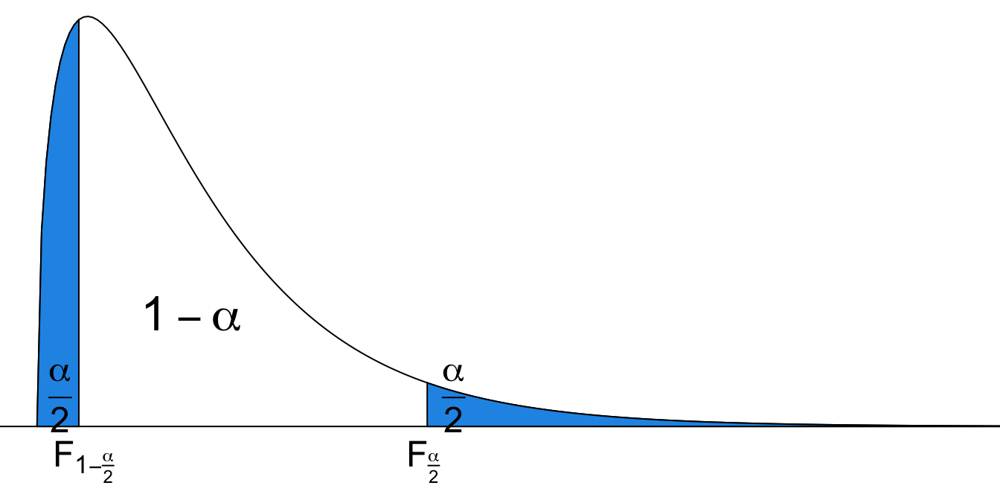

17 Inference About Variances
Why Inference for Population Variances?
We’ve learned how to do inference about one and two population means in the previous chapters. But we care about not only the center but also the dispersion or variability of some population distribution. In this chapter we are going to learn some inference methods for population variances. If the target population follows normal distribution \(N(\mu, \sigma^2)\), our focus now is \(\sigma^2\) or \(\sigma\), not the mean \(\mu\).
But why do we want to do inference about population variance? As population means, most of the time we do not know the true variance value, and in daily lives in some situations, we care about variation. For example, we would like to learn or control the variation in potency of some drug, say drug for lowering blood pressure. We hope the same amount or dose level of the drug provide the same effect on each individual. We don’t want some patients’ blood pressure is lowered a lot, but some other patient’s blood pressure is lowered just a little bit. In other words, we hope the drug effect is consistent or it has small variability. We want the new treatment can provide consistent potency and efficacy for all patients.
We also pay a lot of attention to the variance of stock prices because the higher the variance, the riskier the investment. We may want to monitor our financial portfolio, and the variability of our investment value so that we have long term financial stability.
Moreover, we may want to know if two population variances are equal, so that a correct or better method can be used. For example, in order to get higher statistical testing power, we use the two sample pooled \(t\)-test if \(\sigma_1 = \sigma_2\) or they are very close to each other.
17.1 Inference for One Population Variance
Inference for Population Variances
Let’s start with inference for one population variance. For point estimation, the most intuitive and straightforward point estimator for \(\sigma^2\) is the sample variance \(S^2\) defined as
\[S^2 = \frac{\sum_{i=1}^n(X_i - \overline{X})^2}{n-1}.\]
Note that the the denominator is \(n-1\), not the sample size \(n\). Note that \(S^2\) is a random variable because each data point \(X_i\) and \(\overline{X}\) are assumed random variables. Dividing by \(n-1\) instead of \(n\) actually means something. \(S^2\) is an unbiased estimator for \(\sigma^2\), i.e., \(E(S^2) = \sigma^2\), which is a good property of a point estimator. If we were able to repeatedly collect data sets of the same size \(n\) lots of times, and for each data set we obtain its sample variance, then the average sample variance will be, if not exactly, very close to the true population variance.
The inference methods for \(\sigma^2\) introduced in this chapter require the population to be normally distributed.
Important
The inference methods can work poorly if normality is violated, even if the sample is large.
Chi-Square \(\chi^2\) Distribution
Remember that when we do the inference for population means, we use either normal distribution or Student’s \(t\) distribution. For the inference about the population variances, we use another distribution called chi-square \(\chi^2\) distribution because the distribution is related to the sampling distribution of some variable involving \(S^2\) and \(\sigma^2\). We’ll talk about that later. Let’s first learn a little about the chi-square \(\chi^2\) distribution.
As Student’s \(t\) distribution, the chi-square \(\chi^2\) distribution has one parameter, degrees of freedom \(df\). To denote a specific chi-square distribution, we write \(\chi^2_{df}\) like \(\chi^2_{2}\) for a chi-square distribution or variable with degrees of freedom two. Figure 17.1 shows \(\chi^2\) distributions with varying degrees of freedom. It is in general a right-skewed distribution, but it gets more and more symmetric as \(df\) gets larger. Also, the \(\chi^2\) distribution is defined over positive numbers, one hint why we use it for inferring variances because variance is non-negative, but normal or \(t\) distribution is defined on the whole real line.
Upper Tail and Lower Tail of Chi-Square
Like standard normal and \(t\) distribution, to do the inference for variances, we get to find or define critical values of a chi-square distribution. With some probability \(\alpha\), we define
\(\chi^2_{\frac{\alpha}{2},\, df}\) is a \(\chi^2\) value of a \(\chi^2\) distribution with degrees of freedom \(df\) such that it has area to the right of \(\alpha/2\).
\(\chi^2_{1-\frac{\alpha}{2},\, df}\) is a \(\chi^2\) value of a \(\chi^2\) distribution with degrees of freedom \(df\) such that it has area to the left of \(\alpha/2\). In other words, it has area to the right of \(1 - \alpha/2\), and that’s why it has a subscript \(1-\frac{\alpha}{2}\).
Figure 17.2 illustrates the \(\chi^2\) critical values. Notice that in \(N(0, 1)\), \(z_{1-\frac{\alpha}{2}} = -z_{\frac{\alpha}{2}}\). Because of the symmetry of the distribution, the \(z\)-value having area \(\alpha/2\) on the right is the \(z\)-value having area \(\alpha/2\) on the left with a negative sign. However, the chi-square distribution is not symmetric, so \(\chi^2_{1-\frac{\alpha}{2},\,df} \ne -\chi^2_{\frac{\alpha}{2},\,df}\).
Sampling Distribution
When a random sample of size \(n\) is from \(\color{red}{N(\mu, \sigma^2)}\), the following sample statistic has the \(\chi^2\) sampling distribution with degrees of freedom \(n-1\): \[ \frac{(n-1)S^2}{\sigma^2} \sim \chi^2_{n-1}. \]
I would like to stress again that the inference method for \(\sigma^2\) introduced here can work poorly if the normality assumption is violated, even for large samples.
The sample statistic involves \(S^2\) and \(\sigma^2\), so we have manipulate its sampling distribution to obtain the confidence interval for \(\sigma^2\), and use it as a test statistic in the hypothesis testing for \(\sigma^2\).
\((1-\alpha)100\%\) Confidence Interval for \(\sigma^2\)
The \((1-\alpha)100\%\) confidence interval for \(\sigma^2\) is \[\color{blue}{\boxed{\left( \frac{(n-1)S^2}{\chi^2_{\frac{\alpha}{2}, \, n-1}}, \frac{(n-1)S^2}{\chi^2_{1-\frac{\alpha}{2}, \, n-1}} \right)}}\]
How do we get this interval? We start with the sampling distribution of $ $.
- \(P\left(\chi^2_{1-\frac{\alpha}{2}, \,n-1} < \frac{(n-1)S^2}{\sigma^2} < \chi^2_{\frac{\alpha}{2},\, n-1} \right) = 1 - \alpha\) (Goal: isolate \(\sigma^2\))
- \(P\left(\frac{\chi^2_{1-\frac{\alpha}{2}, \,n-1}}{(n-1)S^2} < \frac{1}{\sigma^2} < \frac{\chi^2_{\frac{\alpha}{2},\, n-1}}{(n-1)S^2} \right) = 1 - \alpha\) (divided by \((n-1)S^2\))
- \(P\left(\frac{(n-1)S^2}{\chi^2_{1-\frac{\alpha}{2}, \, n-1}} > \sigma^2 > \frac{(n-1)S^2}{\chi^2_{\frac{\alpha}{2}, \,n-1}} \right) = 1 - \alpha\) (take reciprocal)
- \(P\left(\frac{(n-1)S^2}{\chi^2_{\frac{\alpha}{2}, \, n-1}} < \sigma^2 < \frac{(n-1)S^2}{\chi^2_{1-\frac{\alpha}{2}, \,n-1}} \right) = 1 - \alpha\) (smaller value on the left)
Be careful that the interval for \(\sigma^2\) cannot be expressed as \((S^2 - m, S^2 + m)\) for some margin of error \(m\) anymore!
Example: Supermodel Heights
Listed below are heights (cm) for the simple random sample of 16 female supermodels.
heights <- c(178, 177, 176, 174, 175, 178, 175, 178,
178, 177, 180, 176, 180, 178, 180, 176)The supermodels’ heights are normally distributed. Please construct a \(95\%\) confidence interval for population standard deviation \(\sigma\).

We just need to get what we need for constructing the interval from the sample data, sample size \(n\), sample variance \(s^2\), \(\alpha\), critical values \(\chi^2_{\alpha/2, n-1}\) and \(\chi^2_{1-\alpha/2, n-1}\).
- \(n = 16\), \(s^2 = 3.4\), \(\alpha = 0.05\).
- \(\chi^2_{\alpha/2, n-1} = \chi^2_{0.025, 15} = 27.49\)
- \(\chi^2_{1-\alpha/2, n-1} = \chi^2_{0.975, 15} = 6.26\)
Note that we want the interval for \(\sigma\), not \(\sigma^2\), we take a square root of the lower and upper bound of the interval for \(\sigma^2\). The \(95\%\) CI for \(\sigma\) is \(\small \left( \sqrt{\frac{(n-1)s^2}{\chi^2_{\frac{\alpha}{2}, \, n-1}}}, \sqrt{\frac{(n-1)s^2}{\chi^2_{1-\frac{\alpha}{2}, \, n-1}}} \right) = \left( \sqrt{\frac{(16-1)(3.4)}{27.49}}, \sqrt{\frac{(16-1)(3.4)}{6.26}}\right) = (1.36, 2.85)\)
We are 95% confident that the height of supermodels has standard deviation between 1.36 and 2.85.
Confidence Interval Computation in R
We use qchisq() to get the \(\chi^2\) critical values. The probability \(p\) and the degrees of freedom df need to be specified. You should be able to understand the rest part of the code. Enjoy it.
## set values
n <- 16
s2 <- var(heights)
alpha <- 0.05
## two chi-square critical values
chi2_right <- qchisq(p = alpha/2, df = n - 1, lower.tail = FALSE)
chi2_left <- qchisq(p = alpha/2, df = n - 1, lower.tail = TRUE)
## two bounds of CI for sigma2
ci_sig2_lower <- (n - 1) * s2 / chi2_right
ci_sig2_upper <- (n - 1) * s2 / chi2_left
## two bounds of CI for sigma
(ci_sig_lower <- sqrt(ci_sig2_lower))[1] 1.362104(ci_sig_upper <- sqrt(ci_sig2_upper))[1] 2.853802Testing
Back to the example. Use \(\alpha = 0.05\) to test the claim that “supermodels have heights with a standard deviation that is less than the standard deviation, \(\sigma = 7.5\) cm, for the population of women”.
Step 1
- We are comparing the \(\sigma\) of heights of supermodels with the \(\sigma\) of heights of women in general which is 7.5. So the hypothesize value \(\sigma_0\) is 7.5. We wonder if supermodel height standard deviation is smaller than 7.5. Therefore, we have test \(H_0: \sigma = \sigma_0\) vs. \(H_1: \sigma < \sigma_0\), where \(\sigma_0 = 7.5\) cm.
Step 2
- \(\alpha = 0.05\)
Step 3
- The test statistic comes from the variable \(\chi_{test}^2 = \frac{(n-1)S^2}{\sigma^2}\) that follows \(\chi^2_{n-1}\) distribution. Under \(H_0\), we have \(\chi_{test}^2 = \frac{(n-1)s^2}{\sigma_0^2} = \frac{(16-1)(3.4)}{7.5^2} = 0.91\), drawn from \(\chi^2_{n-1}\).
Step 4-c
- This is a left-tailed test.
- The critical value is \(\chi_{1-\alpha, df}^2 = \chi_{0.95, 15}^2 = 7.26\)
Step 5-c
- Reject \(H_0\) in favor of \(H_1\) if \(\chi_{test}^2 < \chi_{1-\alpha, df}^2\).
- Since \(0.91 < 7.26\), we reject \(H_0\).
Step 6
- There is sufficient evidence to support the claim that supermodels have heights with a standard deviation that is less than the standard deviation for the population of all women.
We conclude that the heights of supermodels vary less than heights of women in the general women population.
Back to Pooled t-Test
In a two sample pooled t-test, we assume
- \(n_1 \ge 30\) and \(n_2 \ge 30\) or that both samples are drawn from normal populations.
- \(\sigma_1 = \sigma_2\)
We can use a QQ-plot (and normality tests, Anderson, Shapiro, etc.) to check the assumption of a normal distribution. We now learn how to check the assumption \(\sigma_1 = \sigma_2\).
17.2 Inference for Comparing Two Population Variances
F Distribution
For comparing two population variances, we need another distribution called \(F\) distribution. The \(F\) distribution has two parameters \(df_1\) and \(df_2\), a hint why it is used for comparing two variances. We write a specific \(F\) distribution \(F_{df_1, df_2}\). Second, the \(F\) distribution is also right-skewed. Like \(\chi^2\) distribution, the \(F\) distribution is defined over positive numbers. Figure 17.3 illustrates \(F\) distribution with different parameters. You can see that when \(df_1\) and \(df_2\) are both large, the \(F\) distribution looks bell-shaped.
Upper and Lower Tail of F Distribution
We denote \(F_{\alpha, \, df_1, \, df_2}\) as the \(F\) quantile such that \(P(F_{df_1, df_2} > F_{\alpha, \, df_1, \, df_2}) = \alpha\). With it, we can find the critical values \(F_{\frac{\alpha}{2}, \, df_1, \, df_2}\) and \(F_{1-\frac{\alpha}{2}, \, df_1, \, df_2}\) used in constructing the confidence interval for the ratio \(\sigma^2_1/\sigma^2_2\) discussed next.

When random samples of sizes \(n_1\) and \(n_2\) have been independently drawn from two normally distributed populations, \(N(\mu_1, \sigma_1^2)\) and \(N(\mu_2, \sigma_2^2)\) respectively, the ratio \(\frac{S_1^2/S_2^2}{\sigma_1^2/\sigma_2^2}\) has the \(F\) sampling distribution \[\frac{S_1^2/S_2^2}{\sigma_1^2/\sigma_2^2} \sim F_{n_1-1, \, n_2-1}.\]
Important
The order of degrees of freedom matters! \(F_{n_1-1, \, n_2-1} \ne F_{n_2-1, \, n_1-1}\). Please don’t mess around.
\((1-\alpha)100\%\) Confidence Interval for \(\sigma_1^2 / \sigma_2^2\)
From the sampling distribution of the ratio, the \((1-\alpha)100\%\) confidence interval for \(\sigma_1^2 / \sigma_2^2\) is \[\color{blue}{\boxed{\left( \frac{s_1^2/s_2^2}{F_{\alpha/2, \, n_1 - 1, \, n_2 - 1}}, \frac{s_1^2/s_2^2}{F_{1-\alpha/2, \, \, n_1 - 1, \, n_2 - 1}} \right)}}\]
How do we get the interval? Not surprising. We start with the sampling distribution of \(\frac{S_1^2/S_2^2}{\sigma_1^2/\sigma_2^2}\).
\(P\left(F_{1-\alpha/2, \, n_1 - 1, \, n_2 - 1} < \frac{S_1^2/S_2^2}{\sigma_1^2/\sigma_2^2} < F_{\alpha/2, \, n_1 - 1, \, n_2 - 1} \right) = 1 - \alpha\) (Goal: isolate \(\sigma_1^2/\sigma_2^2\))
\(P\left(\frac{1}{F_{\alpha/2, \, n_1 - 1, \, n_2 - 1}} < \frac{\sigma_1^2/\sigma_2^2}{S_1^2/S_2^2} < \frac{1}{F_{1-\alpha/2, \, n_1 - 1, \, n_2 - 1}} \right) = 1 - \alpha\) (take reciprocal)
\(P\left(\frac{S_1^2/S_2^2}{F_{\alpha/2, \, n_1 - 1, \, n_2 - 1}} < \frac{\sigma_1^2}{\sigma_2^2} < \frac{S_1^2/S_2^2}{F_{1-\alpha/2, \, n_1 - 1, \, n_2 - 1}} \right) = 1 - \alpha\) (times \(S_1^2/S_2^2\))
Note
The confidence interval for \(\sigma_1^2 / \sigma_2^2\) cannot be expressed as \(\left(\frac{s_1^2}{s_2^2}-m, \frac{s_1^2}{s_2^2} + m\right)\) anymore!
F test for comparing \(\sigma_1^2\) and \(\sigma_2^2\)
Step 1
For comparing \(\sigma_1^2\) and \(\sigma_2^2\), the test can be either right-tailed or two-tailed. Left-tailed testing is not necessary because we can always define the population whose variance is hypothetically larger than the variance of another population as the first population.
- Right-tailed: \(\small \begin{align} &H_0: \sigma_1 \le \sigma_2 \\ &H_1: \sigma_1 > \sigma_2 \end{align}\)
- Two-tailed: \(\small \begin{align} &H_0: \sigma_1 = \sigma_2 \\ &H_1: \sigma_1 \ne \sigma_2 \end{align}\)
Step 2
- \(\alpha = 0.05\)
Step 3
- Under \(H_0\), \(\sigma_1 = \sigma_2\), and the test statistic is \[\small F_{test} = \frac{s_1^2/s_2^2}{\sigma_1^2/\sigma_2^2} = \frac{s_1^2}{s_2^2} \sim F_{n_1-1, \, n_2-1}\] The denominator is gone because the ratio is one.
Step 4-c
- Right-tailed: \(F_{\alpha, \, n_1-1, \, n_2-1}\) .
- Two-tailed: \(F_{\alpha/2, \, n_1-1, \, n_2-1}\) or \(F_{1-\alpha/2, \, n_1-1, \, n_2-1}\)
Step 5-c
- Right-tailed: reject \(H_0\) if \(F_{test} \ge F_{\alpha, \, n_1-1, \, n_2-1}\).
- Two-tailed: reject \(H_0\) if \(F_{test} \ge F_{\alpha/2, \, n_1-1, \, n_2-1}\) or \(F_{test} \le F_{1-\alpha/2, \, n_1-1, \, n_2-1}\)
Example: Weight Loss
This is our previous example.
A study was conducted to see the effectiveness of a weight loss program. Two groups (Control and Experimental) of 10 subjects were selected. The two populations are normally distributed and have the same standard deviation.

The data on weight loss was collected at the end of six months.
- Control: \(n_1 = 10\), \(\overline{x}_1 = 2.1\, lb\), \(s_1 = 0.5\, lb\)
- Experimental: \(n_2 = 10\), \(\overline{x}_2 = 4.2\, lb\), \(s_2 = 0.7\, lb\)
Check if \(\sigma_1 = \sigma_2\)
- \(n_1 = 10\), \(s_1 = 0.5 \, lb\)
- \(n_2 = 10\), \(s_2 = 0.7 \, lb\)
Step 1
- \(\begin{align} &H_0: \sigma_1 = \sigma_2 \\ &H_1: \sigma_1 \ne \sigma_2 \end{align}\)
Step 2
- \(\alpha = 0.05\)
Step 3
- The test statistic is \(F_{test} = \frac{s_1^2}{s_2^2} = \frac{0.5^2}{0.7^2} = 0.51\).
Step 4-c
- This is a two-tailed test.
- The critical value is \(F_{0.05/2, \, 10-1, \, 10-1} = 4.03\) or \(F_{1-0.05/2, \, 10-1, \, 10-1} = 0.25\).
Step 5-c
- Is \(F_{test} > 4.03\) or \(F_{test} < 0.25\)?
- No.
Step 6
- The evidence is not sufficient to reject the claim that \(\sigma_1 = \sigma_2\).
95% CI for \(\sigma_1^2 / \sigma_2^2\)
- \(\small F_{\alpha/2, \, df_1, \, df_2} = F_{0.05/2, \, 10-1, \, 10-1} = 4.03\)
- \(\small F_{1-\alpha/2, \, df_1, \, df_2} = F_{1-0.05/2, \, 10-1, \, 10-1} = 0.25\)
- \(\small \frac{s_1^2}{s_2^2} = \frac{0.5^2}{0.7^2} = 0.51\)
- The 95% CI for \(\sigma_1^2 / \sigma_2^2\) is \[\small \begin{align} &\left( \frac{s_1^2/s_2^2}{F_{\alpha/2, \, df_1, \, df_2}}, \frac{s_1^2/s_2^2}{F_{1-\alpha/2, \, df_1, \, df_2}} \right) \\ &= \left( \frac{0.51}{4.03}, \frac{0.51}{0.25} \right) = \left(0.127, 2.05\right)\end{align}\]
We are 95% confident that the ratio \(\sigma_1^2 / \sigma_2^2\) is between 0.127 and 2.04. Because one is included in this interval, meaning that \(\sigma^2_1 = \sigma^2_2\), it leads to the same conclusion as the F test.
Implementing F-test in R
We use qf() to find the \(F\) critical values.
## set values
n1 <- 10; n2 <- 10
s1 <- 0.5; s2 <- 0.7
alpha <- 0.05
## 95% CI for sigma_1^2 / sigma_2^2
f_small <- qf(p = alpha / 2, df1 = n1 - 1, df2 = n2 - 1,lower.tail = TRUE)
f_big <- qf(p = alpha / 2, df1 = n1 - 1, df2 = n2 - 1, lower.tail = FALSE)
## lower bound
(s1 ^ 2 / s2 ^ 2) / f_big[1] 0.1267275## upper bound
(s1 ^ 2 / s2 ^ 2) / f_small[1] 2.054079## Testing sigma_1 = sigma_2
(test_stats <- s1 ^ 2 / s2 ^ 2)[1] 0.5102041
Note
If we have the entire two samples data, we can use the R built-in function var.test(x, y, alternative = "two.sided") to perform a \(F\) test to compare the variances of two samples from normal populations. The arguments x and y are numeric vectors of data values. Argument alternative must be one of "two.sided" (default), "greater" or "less".
17.3 Exercises
- The data about male and female pulse rates are summarized below.
- Construct a 95% CI for \(\sigma_{male}\) of pulse rates for males.
- Construct a 95% CI for \(\sigma_{male}/\sigma_{female}\).
- Does it appear that the population standard deviations for males and females are different? Why or why not?
| Male | Female | |
|---|---|---|
| \(\overline{x}\) | 71 | 75 |
| \(s\) | 9 | 12 |
| \(n\) | 14 | 12 |